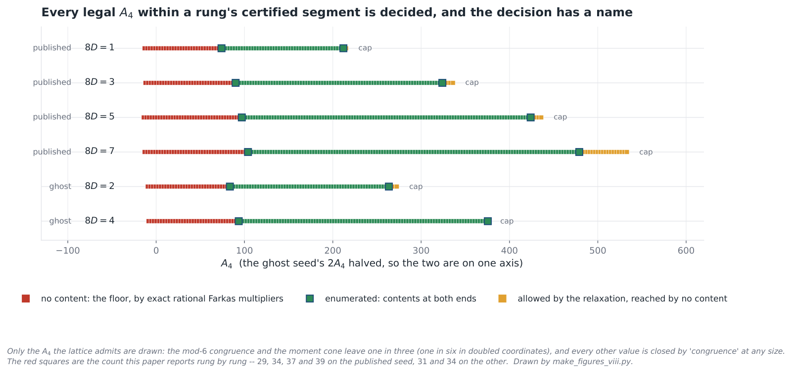
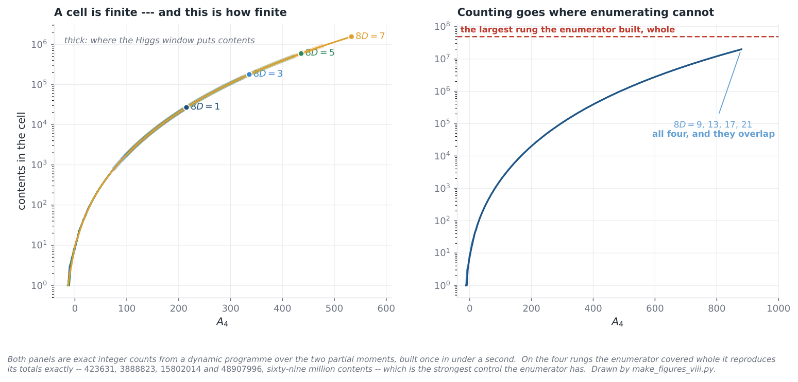
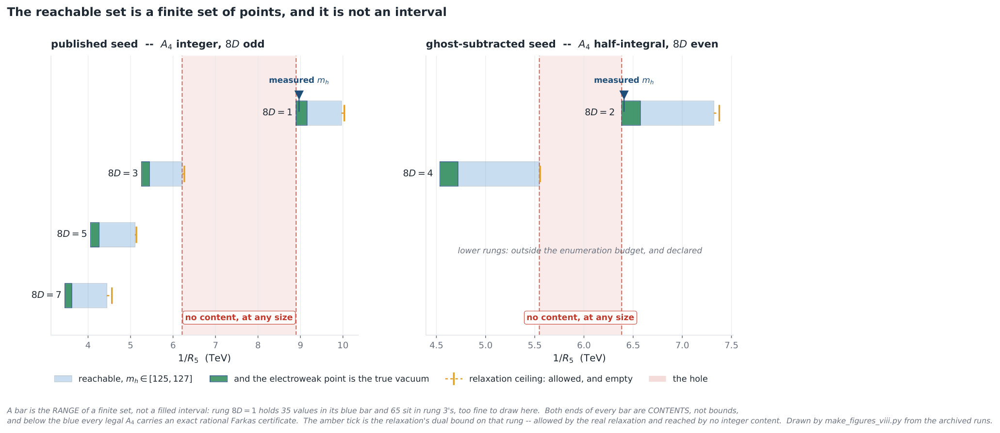
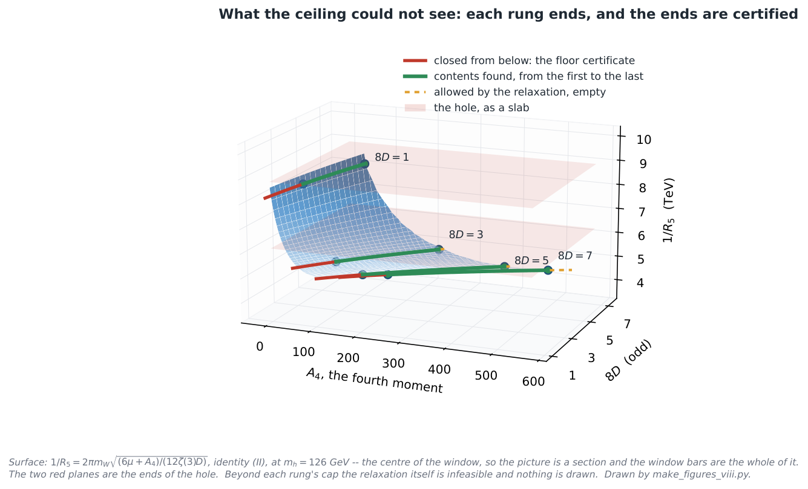

A Certified 2.68 TeV Gap in the Closed-Form Map of the Compactification Scale in SU(7) Grand Gauge-Higgs Unification, and the Invariant Its Two Observables Cannot See (Part VIII)
At a glance
What the paper contributes
Part VII of the series bounds the compactification scale of the SU(7) grand gauge-Higgs model of Komori and Maru from above. This paper runs the same closed-form map backwards: given a target (1/R5, mh), it returns a bulk content or a named certificate that none exists. Every emptiness statement is about the closed form, not yet about the untruncated model, and the paper says so.
- The inversion is exact (Proposition 1): on a cell with 8D > 0 a target box pulls back to one interval of the moment G, both ends evaluations.
- “No content” is a decision (Observation 1): only 7(+,+) has A4 = 0, so a cell is finite; the five certificates are cone, congruence, an exact rational Farkas pair, exhaustion and floor, and one dual certificate is printed in full.
- A certified gap of the closed-form map: on the published seed the enumerated image is 35 points in [8897.5, 9967] GeV (8D = 1) and 65 in [5258, 6215] GeV (8D = 3), and nothing lies in (6.216, 8.897) TeV. At the measured Higgs mass one point remains, 1/R5 = 8967.5 GeV, carried by 81 contents with the same one-loop potential.
- What the two observables cannot see (Proposition 3): on a fixed rung they fix four of the five complete invariants, but two contents share both and disagree about the vacuum invariant W.
- Counting without building (Proposition 2, the classical restricted-partition recursion): a cell is counted by dynamic programming, which reproduces the enumerator’s totals over 69 million contents.
🚀 Start here: Proposition 1: on a cell with 8D > 0, a target box pulls back to one interval of G, with both ends evaluations.
Main results:
- Proposition 1: on a cell with 8D > 0, a target box pulls back to one interval of G, with both ends evaluations
- Observation 1: a cell (A₄, 8D) is a finite set, because only 7(+,+) has A₄ = 0
- Proposition 3: on a fixed rung the two observables fix A₄, G and (U, V), and leave only W free
🗺️ Map of the results (click a box to go to it)
Dependencies in the written proof: an arrow A → B means that this proof of B uses A. Every result rests on its written proof; the tags record what was checked besides, and each statement's “Evidence & scope” block says how far. The colour of a box is its strongest tag, in the order above; the tags in the box give the rest. Boxes with a thick border are the main results; click a box to read the statement.
📐 Setting (copied from the paper, §3)
Everything the potential predicts factors through the moments. With \(x = \pi {\alpha _{\min }}\) and \(\mu = m_h^2/(K\pi ^2)^2\), \(K = (\sqrt3/2\pi ^3)m_W g_4\), Part VII’s two logarithm-free identities are
A target box in \((1/R_5, m_h)\) is a box in \((x,\mu )\), since \(1/R_5 = 2\pi m_W/x\). A rung in what follows is a value of \(8D\), and \(A_4\) runs along it; a single \((A_4, 8D)\) is a cell of that rung. (§4) A bulk content is a non-negative integer combination of eight generators, one for each pairing of the four \(SU(7)\) representations [ 1 ] admits in the bulk — \(\mathbf{7}\), \(\mathbf{28}\), \(\mathbf{48}\), \(\mathbf{84}\) — with the two orbifold parities \((+,+)\) and \((+,-)\). […] of the eight generators, only \(\mathbf{7}(+,+)\) has \(A_4 = 0\), and the other seven have positive integer \(A_4\). (§5) The count is a vector partition function — the number of \(n \in {\mathbb {Z}}^8_{\ge 0}\) with \(\sum _j n_j A_4^{(j)} = A_4 - A_4^{\rm gauge}\) and \(\sum _j n_j (8D)^{(j)} = 8D - 8D^{\rm gauge}\). (§6) Two bulk contents have the same one-loop potential, as a function of \(\alpha \), if and only if they agree on all five of \((A_4, 8D, 2U, V, 2W)\). […] Part VII’s own \(G = \tfrac {25}{12}A_4 - U\ln 2 - V\ln 3\).
1 Introduction: what a ceiling does not say
No numbered statement in this section.
Its figures and tables are below; its text is in the paper, p. 2.
🖼️ Figure 1
![\includegraphics[width=1.0\textwidth ]{figures/paperfig-1.png}](images/img-0001.png)
The chain, and every link is something the extremal direction never had to decide. It is Part VII’s opening chain read backwards, and each box is forced by the one above rather than chosen: monotonicity of \(\mu \) and then of \(G\) makes the pull-back one interval per cell, one generator with \(A_4=0\) makes a cell finite, finiteness makes “no content exists” a decision with a named certificate, and only then does it make sense to ask how finite. The last green box is the same two identities read for what they leave undetermined, which is the second half of the title. The red box is not a link but the edge of the chain.
2 What is inherited, and what is computed
No numbered statement in this section.
It is prose only (no statement, figure or table): read it in the paper, p. 4.
3 The inversion
Fix a cell \((A_4, 8D)\) with \(8D {\gt} 0\), and move along the curve (2)(II). Then
so \(G\) is strictly decreasing in \(x\). The admissible \(x\) are themselves an interval, because solving (2)(II) for \(\mu \) gives
which makes \(\{ x{\gt}0 : \mu (x) \in [\mu _-,\mu _+]\} \) an interval; intersecting it with \([x_-,x_+]\) leaves an interval \([x_{\min }, x_{\max }]\) when that intersection is non-empty. Hence the set of \(G\) a target box admits on this cell is the interval \([\, G(x_{\max }),\, G(x_{\min })\, ]\), and both ends are evaluations. When the intersection is empty the cell admits no \(G\) at all, and the target has no content there — which is a decision and not a failed search, by §4.
🆕 Classical and new: the paper lists the exactness of the inversion among what is ours (§1, item 1); the identities (I), (II) are Part VII’s.
↳ Not used by another result of the paper.
💡 In plain words (commentary, not part of the paper)
1. Ask for a box of compactification scales \(1/R_5\) and Higgs masses \(m_h\). On one cell \((A_4,8D)\) of the lattice of bulk contents, with \(8D{\gt}0\), the box asks for one interval of the logarithmic moment \(G\), and both ends of that interval are evaluations of a formula: no sampling and no bisection. If the interval is empty, the cell has no content in the box. 2. Why: Part VII’s identity (II) makes \(\mu \) (the Higgs mass in the paper’s units) a strictly decreasing function of \(x=\pi \alpha _{\min }\) on the cell, so the admissible \(x\) form one interval; and along that curve identity (I) gives \(dG/dx=-6\mu /x{\lt}0\), so \(G\) is strictly decreasing and the image of that interval is the interval between its two end values. At \(8D=0\), \(\mu \) would be constant and the argument fails, which is why the hypothesis is there; every rung of the published seed has \(8D\) odd. 3. What the paper claims: the exactness of the inversion is listed first among what is new (§1, item 1); the identities (I) and (II) themselves are Part VII’s. That an empty interval is a decision rather than a failed search needs the finiteness of a cell (Observation 1).
🛡️ Evidence & scope
Program: the inverse map on the published seed: the five certificates, the clusters, the gap, the worked Farkas certificate, the design table; finiteness of a cell (Observation 1) used throughout. scripts/inverse_design.py
Program: the same on both gauge seeds in doubled coordinates. scripts/reachable_set.py
Program: every interval printed as empty is contained in the one the run certifies. scripts/check_intervals.py
Program: the displayed formulas against their Python reading and the archived run; each link perturbed separately and required to fail. scripts/check_formulas.py, scripts/falsify_formulas.py
4 Why “no content” is a decision
Fix a cell \((A_4, 8D)\) inside the moment cone, so that \(A_4 \ge A_4^{\rm gauge}\). The seven generators with \(A_4^{(j)} \ge 1\) satisfy \(\sum _j n_j A_4^{(j)} = A_4 - A_4^{\rm gauge}\) with every term non-negative, so \(\sum _j n_j\) is bounded and each of the seven with it; and the multiplicity of \(\mathbf{7}(+,+)\) is then forced by \(8D\), since among the generators left it is the only one that still moves it. The cell is a finite set, enumerated rather than searched.
Lean · ours, in partshow
added to the Lean repository after publication: the input of the observation, the moments (8D, 2A₄) of the eight bulk generators computed from the weights by decide, of which only 7(+,+) has 2A₄ = 0; the finiteness of a cell itself is not formalized
✅ Checked when this page was built: SU7WeightChannels.lean compiles with Lean 4.35.0, no errors, no sorry. Axioms — eight_generator_moments: propext, Classical.choice, Quot.sound.
Reproduce: Lean 4.35.0, Mathlib f0b4c8150aa0; in that Lean project, lake env lean SU7WeightChannels.lean (SHA-256 of the compiled file: c5ea89a376796475…; a source page on this site may show it with comments edited, under its own hash).
Trust base: 🔒 kernel only — only part of the statement is formal (see the box). Lean: 1 result, standard axioms only
🆕 Classical and new: the paper calls it ours: Part VII’s lattice dump prints the fact and never uses it (§4, §9).
↳ Used in: Proposition 1, Proposition 2
💡 In plain words (commentary, not part of the paper)
1. A bulk content is a non-negative integer combination of eight generators (the representations \(\mathbf7\), \(\mathbf{28}\), \(\mathbf{48}\), \(\mathbf{84}\) of \(SU(7)\), each with two orbifold parities). Fixing both moments \((A_4,8D)\) leaves only finitely many contents, so whether a cell holds a content is decided by listing them. 2. Why: only \(\mathbf7(+,+)\) has \(A_4=0\); the other seven have positive integer \(A_4\), so at fixed \(A_4\) their multiplicities are bounded, and the multiplicity of \(\mathbf7(+,+)\) is then forced by \(8D\), being the only generator left that still moves it. 3. A whole rung (fixed \(8D\), any \(A_4\)) is not finite: \(\mathbf{48}(+,+)\) has \(8D=0\) and can be added without limit. What is finite inside a target box is a rung’s admissible segment. The paper calls the observation its own: Part VII’s lattice dump prints the fact and never uses it. With it, “no content” becomes one of five named certificates: floor, cone, congruence, dual, exhaustion.
🛡️ Evidence & scope
Program: the four admissible segments 8D = 1, 3, 5, 7 enumerated whole; on the 3.0 TeV target, the 9 dual-closed rungs brute-forced: 0 contents. scripts/inverse_design.py
🖼️ Figure 2

Every legal \(A_4\) within a rung’s certified segment is decided, and the decision has a name. Only the \(A_4\) the lattice admits are drawn: the congruence and the moment cone together leave one value in three, and every other value is closed by congruence at any size. Red: below the first occupied \(A_4\), every legal value carries exact rational multipliers — \(29\), \(34\), \(37\) and \(39\) of them on the four rungs of the published seed, \(31\) and \(34\) on the two enumerated rungs of the other. Green: the stretch the enumerator covered, with contents at both ends. Amber: between the last content and the relaxation’s own cap, allowed by the real relaxation and reached by nothing integral — which is the same emptiness Part VII finds at its vertex, seen here along the whole certified segment rather than at one point. Drawn by make_figures_viii.py, whose lattice arithmetic is checked against the archived runs before anything is plotted.
5 How large is a cell
Write \(P(T,Q)\) for the number of contents built from the seven generators with \(A_4^{(j)}\ge 1\) alone that reach \((T,Q) = (A_4 - A_4^{\rm gauge},\, 8D - 8D^{\rm gauge})\). Then
🆕 Classical and new: not claimed: the classical restricted-partition recursion [BeckRobins] in its vector form; the paper claims only the measurement that the correction term is 1 or 2 (§9).
↳ Not used by another result of the paper.
🛡️ Evidence & scope
Program: the counting table by dynamic programming; the recursion checked on 4694 grid points; the four enumerator totals reproduced exactly (69 million contents). scripts/rung_census.py
🖼️ Figure 3

A cell is finite, and this is how finite. Left: the counting function on the four rungs §?? enumerates, with the stretch the Higgs window populates drawn thick. The four curves lie on top of one another, which is Proposition 2: raising \(8D\) by six removes only the contents that carried no \(\mathbf{7}(+,+)\), and there are one or two of those where the cell holds tens of thousands. Right: the same table continued past where the enumerator can go — four rungs are drawn and they coincide for the same reason, which is why one label serves for all four. Both panels are exact integer counts. Drawn by make_figures_viii.py.
6 The reachable set on the published seed
Fix \(8D\). Two contents with the same \((1/R_5, m_h)\) have the same \(A_4\), hence the same \(G\), hence the same \((U,V)\). So at fixed \(8D\) the two observables determine four of the five invariants — \(A_4\), \(8D\), \(2U\), \(V\) — and leave only \(W\) free.
Lean · ours, in partshow
added to the Lean repository after publication (21-oct-2026): 2^a 3^b = 1 with integer exponents forces a = b = 0
✅ Checked when this page was built: TwoThreeIndependence.lean compiles with Lean 4.35.0, no errors, no sorry. Axioms — two_zpow_mul_three_zpow_eq_one: propext, Classical.choice, Quot.sound.
Reproduce: Lean 4.35.0, Mathlib f0b4c8150aa0; in that Lean project, lake env lean TwoThreeIndependence.lean (SHA-256 of the compiled file: 514d8acb5a394b61…; a source page on this site may show it with comments edited, under its own hash).
Trust base: 🔒 kernel only — only part of the statement is formal (see the box). Lean: 1 result, standard axioms only
🆕 Classical and new: the arithmetic is unique factorisation and "is nobody’s"; what the paper claims is noticing that the census of the measured-mass fibre depends on it (Acknowledgements, §9).
↳ Not used by another result of the paper.
💡 In plain words (commentary, not part of the paper)
1. On a fixed rung \(8D\), two bulk contents with the same two observables \((1/R_5,m_h)\) have the same \(A_4\), the same \(G\) and the same \((U,V)\): the observables fix four of the five complete invariants \((A_4,8D,2U,V,2W)\) and leave only \(W\), the one whose sign can rule the electroweak vacuum out. 2. Why: identity (II) gives \(A_4=\tfrac 32\zeta (3)(8D)/x^2-6\mu \), so at fixed \(8D\) the observables fix \(A_4\); identity (I) then fixes \(G\); and \(G=\tfrac {25}{12}A_4-U\ln 2-V\ln 3\) with \(A_4\) common gives \(2^a3^b=1\) for integers \(a,b\), so \(a=b=0\) by unique factorisation. No transcendence of \(\ln 2\) or \(\ln 3\) is used. 3. What the paper claims: the arithmetic “is nobody’s”; what is its own is noticing that the census of the 81 contents at the measured Higgs mass depends on it. Across different rungs the same conclusion is only measured (on the 314 points reached), not proved. And \(W\) really is left free: two contents on rung one share both closed-form observables with \(2W=+5\) and \(2W=-27\), and the exact potential separates them by only \(3.8\) MeV in \(m_h\).
🛡️ Evidence & scope
Program: distinct (2U, V) = distinct G on all four rungs (3029, 8769, 16938, 28601); no cross-rung collision among the 314 points; the degenerate pair 2W = +5 / −27 and its exact-potential split of 3.8 MeV. scripts/what_the_observables_miss.py
🖼️ Figure 4

The reachable set, on the axis it lives on. One bar per rung, and a bar is a range and not a filled interval: pale blue spans the \(35\) values rung one reaches with \(m_h\) in [ 1 ] ’s window and the \(65\) of rung three, which are too finely spaced to resolve at this width; green spans the part where the electroweak point is also the deepest place on the domain — nine of the \(35\) on rung one. The amber tick is the relaxation’s dual bound — allowed by the real relaxation and reached by no integer content, on every rung and not only at Part VII’s vertex. The red band is ??, and what makes it different in kind from the gaps inside a blue bar is that it is forty-five times wider and carries a certificate. Both ends of every blue bar are contents. On the candidate seed the enumerator stops after two rungs, which is said in the panel rather than left as white space: below \(8D=4\) the cells run to \(10^7\) contents and past the declared budget. Drawn by make_figures_viii.py.
🖼️ Figure 5

The same thing over the lattice it lives on. Once \(m_h\) is pinned, identity (II) makes \(1/R_5\) an explicit surface over the two quantised moments, with no minimisation left in it — that surface is Part VII’s. What the inverse direction adds is drawn on it: red where the floor argument closes the rung, green from the first content to the last, amber where the relaxation still allows and nothing integral lands. The two translucent planes are the ends of ??, so the hole is a layer of scale that the surface passes through and no content sits on. The section is taken at the centre of the Higgs window; Figure ?? is the whole of it. Drawn by make_figures_viii.py.
7 A content at the scale you name
No numbered statement in this section.
It is prose only (no statement, figure or table): read it in the paper, p. 17.
8 What the windows say at the LHC
No numbered statement in this section.
It is prose only (no statement, figure or table): read it in the paper, p. 18.
9 The other seed, and what survives it
No numbered statement in this section.
Its figures and tables are below; its text is in the paper, p. 21.
🖼️ Figure 6
![\includegraphics[width=1.0\textwidth ]{figures/paperfig-6.png}](images/img-0006.png)
One lattice law, two base points. The two seeds share the reachable subgroup of \({\mathbb {Z}}^2\) and differ only in where it is anchored, so in doubled coordinates their combs interleave rather than sit one inside the other — the published seed on the odd rungs, the candidate on the even ones. Each carries its own pair of window ends and its own hole, drawn as translucent planes. The two holes are not a rescaling of one another: the ratio of their ends is \(1.4315\) against \(1.1510\). Section at the centre of the Higgs window. Drawn by make_figures_viii.py.
10 What is new, and what is not
No numbered statement in this section.
It is prose only (no statement, figure or table): read it in the paper, p. 22.
11 Scope, and what is not claimed
No numbered statement in this section.
It is prose only (no statement, figure or table): read it in the paper, p. 23.
12 What this leaves
No numbered statement in this section.
It is prose only (no statement, figure or table): read it in the paper, p. 24.
The ledger
No numbered statement in this section.
Its figures and tables are below; its text is in the paper (PDF).
|
Established, and how |
Where |
|
The pull-back of a target box is exact: in a cell \((A_4,8D)\) with \(8D{\gt}0\), \(d\mu /dx{\lt}0\) makes the admissible \(x\) an interval when non-empty and \(dG/dx = -6\mu /x {\lt} 0\) carries it to one interval of \(G\) per cell, with both ends evaluations. No sampling and no bisection enter the paper |
§3, Proposition 1; the three members of the chain and the sign, gated against a finite difference |
|
A cell \((A_4,8D)\) is a finite set, because of the eight generators only \(\mathbf{7}(+,+)\) has \(A_4 = 0\) — which is printed by Part VII’s lattice dump and never used there. A whole rung is not: \(\mathbf{48}(+,+)\) has \(8D=0\) and can be added without limit |
§4, Observation 1; what is finite is the rung’s admissible segment, and inside a target box that follows from \(A_4 = \tfrac 32\zeta (3)(8D)/x^2 - 6\mu \) with \((x,\mu )\) compact |
|
Hence “no content sits here” is a decision with a named reason, and the reasons are five — cone, congruence, dual, exhaustion, floor — two of them carrying exact rational multipliers |
§4; on the \(3.0\) TeV target \(9\) rungs carried a dual and brute force found \(0\) contents on every one. One dual is printed in full there — two multipliers, eight inequalities and a sum — so a reader can check a certificate without running anything |
|
The count of a cell \((A_4,8D)\) is a vector partition function [ 8 ] , computed by dynamic programming over the two partial moments in under a second |
§5; it reproduces the enumerator’s four totals exactly — \(423631\), \(3888823\), \(15802014\), \(48907996\) — by an algorithm sharing no code with it |
|
The correction term of the classical recursion is \(1\) or \(2\) where the cell holds tens of thousands, so the four counting curves are indistinguishable — the identity itself is not ours: \(N(A_4,8D+6) = N(A_4,8D) - P\) is \(p_{\mathcal A}(n,k-1) = p_{\mathcal A}(n,k) - p_{\mathcal A}(n-a_k,k)\) [ 9 ] for the generator with \(A_4=0\) |
§5, Proposition 2; machine-checked on \(4694\) grid points, no failure |
|
On the segments enumerated whole, the reachable image is a finite set of points — \(35\), \(65\), \(88\) and \(126\) on the four rungs — falling in one cluster per rung, and the least and greatest of each cluster are attained by contents rather than bounded |
§6; \(35\) points over \([8897.5,9967]\) GeV at \(8D=1\) and \(65\) over \([5258,6215]\) at \(8D=3\), spaced \(31.46\) and \(14.96\) GeV apart on average, the extremes re-minimised on the exact potential. The counts reproduce the enumerator’s \(1769\), \(4495\), \(8434\) and \(13915\) by an independent route |
|
On a rung, \((1/R_5, m_h)\) fix four of the five complete invariants and leave only \(W\); and on the enumerated rungs they fix the rung too, which is measured and not proved |
§6, Proposition 3; with \(A_4\) fixed by the observables at that \(8D\), equal \(G\) forces equal \((U,V)\), because \(2^a3^b=1\) has only the trivial solution. Checked on all four rungs: \(3029\), \(8769\), \(16938\) and \(28601\) distinct \((2U,V)\), and exactly as many distinct \(G\). Across rungs: of the \(314\) points the four reach, no two from different rungs share both observables — the closest pair in scale is \(0.0446\) GeV apart and \(1.25\) GeV apart in \(m_h\), clearing the collision test’s \(10^{-6}\) GeV window by a factor of \(4.46\times 10^4\) and one unit in the last place by \(4.9\times 10^{10}\) |
|
And \(W\) decides something: \(W{\lt}0\) rules the electroweak vacuum out, and two contents can share both closed-form observables and disagree about it at a scale the model occupies |
§6; three of rung one’s \(35\) points carry both signs of \(2W\), and the highest is \(9156.17\) GeV — the rung’s own true-vacuum top. There \(2W=+5\) and \(2W=-27\) share \({\alpha _{\min }}= 0.017561920407\) in the closed form. On the exact potential they part, by \(3.8\) MeV in \(m_h\) against the \(110\) MeV [ 10 ] quotes: the degeneracy is exact in the closed form and broken a factor of \(29\) under the measurement, and the paper says which of the two it claims |
|
No content of [ 1 ] ’s eight types puts \(1/R_5\) anywhere in \((6.216,\, 8.897)\) TeV — ends rounded inward, since both are attained. Not that the image is disconnected, which a finite image is for free, but that a stretch this size is empty and is closed by a certificate |
§6, eq. (3); \(2682\) GeV, forty-five times the widest gap inside either cluster. Closed above by rung one’s own rational duals, below by an enumeration of rung three, with \(8D \ge 5\) ruled out by the relaxation’s monotone ceiling. A statement about the closed form, not yet about the untruncated model — see §11 |
|
At the measured Higgs mass what is left is one point, \(1/R_5 = 8967.5\) GeV |
§6, eq. (4); \(81\) contents, \((A_4,G) = (86,\, 58.2125)\) |
|
Those \(81\) agree in all five of Part VII’s complete invariants, so they are a single one-loop potential built \(81\) ways — the smallest of \(19\) multiplets and the largest of \(198\) — and not \(81\) models that predict the same number |
§6, eq. (6); exact integers, and the class at \((q,r,s) = (86,0,\tfrac {397}{2})\) splits in \(2W\), so the measurement could have come out the other way |
|
The clusters transport to the likelihood, and three numbers answer three questions: \(11.98\) at the relaxation ceiling nothing occupies, \(12.87\) at the highest content of any kind, \(27.44\) at the highest with a true vacuum |
§8, eq. (7); on Part VII’s own published curve, which reproduces its four comb teeth first. Part VII could read only the first |
|
The likelihood image inherits the hole: \(\Delta \chi ^2 \in (33.89,\, 253.54)\) is reached by no content whatever |
§8, eq. (8); this, and not the wider gaps between the true-vacuum images, is the collider-space image of (3) — rung three’s highest content of any kind gives \(253.54\) and sits inside those. Neither is by itself a content-independent exclusion or a detector-level \(\mathrm{CL}_s\) statement, and no threshold is quoted for them |
|
At \(\Gamma /M\simeq 0.16\) there is no bump to look for: the measured dijet spectrum ends \(2.32\, \Gamma \) above the candidate seed’s floor and \(0.10\, \Gamma \) below the published seed’s — and \(0.15\, \Gamma \) below the published seed at the measured mass — with \(46\) events above the first and none above either of the other two. The object does not peak in the tail; it is the tail |
§8; CMS’s spectrum [ 26 ] ends at \(8752\) GeV. The principle is methodology, and ATLAS’s words for it [ 27 ] are quoted where it is used; the measurement is this paper’s, and it is the missing half of Part VII’s reason for choosing the angular distribution |
|
The structure survives the gauge-seed fork and the numbers do not: in doubled coordinates both seeds carry the same lattice law and differ only in the base point |
§9; window \([6384,6574]\) GeV, a hole, and a single point \(6407.7\) GeV at the measured mass |
|
The instrument lands on Part VII’s published numbers running the other way |
\(9967\) GeV at its largest occupied vertex \((212,1)\), \(9157\) GeV its true-vacuum witness, \(7376.3\) GeV the candidate branch’s archived ceiling, and the four comb teeth. §2, §6, §8 |
|
Corrected here, and left visible |
Why |
|
Part VII’s comb sentence, “a content may sit anywhere at or below its own”, read literally makes the image a union of half-lines |
they are not half-lines: every rung has a floor, and the floor carries the same kind of exact rational certificate as the ceiling above it. Nothing in Part VII depends on the reading — its collider argument uses only the half that stays true. §1, §6 |
|
The natural reading of the window table — that the in-window counts climb \(1769 \to 4495 \to 8434 \to 13915\) because higher rungs are bigger sets |
at fixed \(A_4\) they are slightly smaller, by Proposition 2. What grows is the relaxation’s cap: \(215\), \(336\), \(436\), \(533\). §5 |
|
Part VII prescribes reading the model-independent \(\sigma B A\) limit “as a function of mass and width, read at \(\Gamma /M\simeq 0.16\)” |
no such curve exists above \(6.0\) TeV: the two columns bracketing \(0.16\) — CMS’s [ 26 ] \(30\, \% \) and ATLAS’s [ 27 ] \(15\, \% \) — both stop there, as do CMS’s \(10\, \% \) and \(55\, \% \). Columns that run higher exist but every one is narrower than the object, and a narrow-width limit is, in that paper’s own words, a limit on a different particle. Every scale in that chain lies above \(6.0\) TeV, so the prescription is not executable at the masses it was written for, and the cause is the lineshape rather than a gap in the data. §8 |
|
Our own earlier reading, that the pairs of numbers per rung bound a filled window, and that \((1/R_5,m_h)\) fix three invariants |
a content leaves no continuous parameter, so the image of each enumerated admissible segment is a finite set — \(35\) points on rung one, \(31.5\) GeV apart — and the tabulated pairs are its least and greatest. And the observables fix four invariants, by Proposition 3. Both corrections make the paper’s own statements stronger: the hole has to beat \(59.4\) GeV rather than \(0\), and it beats it by forty-five times. §6 |
|
A control of our own asked for more than the argument needs: monotonicity of \(\Delta \chi ^2\) over the whole \(3\)–\(40\) TeV curve |
it is false above about \(15.5\) TeV, where \(\Delta \chi ^2\) is negative and climbing — the soft tension CMS reports, and a stretch no content of this model reaches. The argument needs monotonicity only where the reachable set lives, and there it holds on all thirteen segments. §8 |
|
Open, and stated as open |
Why |
|
The enumerator’s reach below rung nine’s ceiling, \(4208.7\) GeV |
the admissible segments of rungs \(8D=1,3,5,7\) are enumerated whole, down to the \(3456\) GeV floor of rung seven; what is out of reach is a target low enough to admit rung nine and below, where the admitted cell sits at \(A_4\) of order a thousand and holds of order \(10^7\) contents. The remedy is branch and bound with the cone bound at interior nodes, or a Hilbert-basis enumeration; neither is here, and every statement below that scale is marked with the budget it ran out of. §7, §12 |
|
Whether the hole survives untruncated — so (3) is named the hole of the closed-form map and not of the model |
the contents at the ends are verified on the exact potential; that they are still the ends is not, and the emptiness is further off, because the dual bounds \(G\) and \(G\) lives inside the truncation. The remedy is a uniform remainder bound carried through the Farkas inequality, a finite computation that is not done here. Part VII’s own closing question, asked of a lower end. §2, §11, §12 |
|
A cross-rung uniqueness lemma, and with it the global form of Proposition 3 |
that two different rungs cannot share \((1/R_5, m_h)\) is measured on the \(314\) points the four enumerated rungs reach, and not proved. (2)(II) at a fixed \((x,\mu )\) cuts a line through the lattice, so the question is real; the rungs overlap in scale and are separated by \(m_h\) instead. §6 |
|
Whether the candidate rung set is finite for every positive target |
monotonicity of the per-rung ceiling makes the admissible rungs an initial segment, which is finite as soon as some rung’s ceiling falls below the target — and at \(8D=21\) it is \(3390\) GeV, so every target above that is decided over all rungs. Whether the ceiling tends to zero is not proved here, and below \(3390\) GeV the reach is the declared budget’s. §3, §7 |
|
Whether \(W{\gt}0\) is sufficient for the electroweak point to be the true vacuum |
it is not, in general: it compares two symmetric points and nothing else, and on \(8D=2\) of the other seed the screen and the exact potential disagree. What is used here is the direction that does hold, \(W{\lt}0 \Rightarrow \) not the true vacuum, plus the full minimisation at every cluster end and every delivered design, and for the census between them the cheap test, falsified first. §4, §6, §9 |
|
Perturbativity of the larger fibre members |
never imposed. Contents run to \(198\) multiplets and the one-loop potential is used at face value; a bound on the bulk content from perturbativity up to \(1/R_6\) would only remove contents, so (3) survives it. §11 |
|
The quasi-polynomial structure of the counting function |
measured and not claimed: the period is generated by the \(2\times 2\) determinants and is large, and the seventy-seven legal \(A_4\) of rung one leave no room. Exact integer finite differences at periods \(1\), \(2\), \(3\), \(6\) and \(12\) — no degree up to nine resolves. §5 |
|
Every theory-side scale carries Part VI’s anchor residual |
this paper does not touch it. What does not inherit it is the arithmetic — the congruence, the finiteness of a cell, the five certificates — since none of those passes through \({\alpha _{\min }}\). §2 |
|
Which gauge seed [ 1 ] ’s eq. (68) selects |
open in Part VII and still open. The honest form of every number here is the pair. §9 |
|
Is \(\Delta \chi ^2 = 27.44\) an exclusion? |
no, and for the reason Part VII gives for its own: a Gaussian \(\chi ^2\) over unfolded data is not CMS’s detector-level \(\mathrm{CL}_s\). Nor is it compared here against \(3.84\) or any other nominal point: the distribution of this statistic under the null is not established, so no threshold is quoted. These are sensitivities, and what they establish is an ordering. §8 |
|
What the windows do once anomaly cancellation, proton decay and fermion masses are imposed |
they can only remove contents, and on a window a few per cent wide holding a few hundred they are a finite check rather than a search — and the one thing they cannot do is fill (3). §12 |
Colour: red = no / fails.
Acknowledgements
No numbered statement in this section.
It is prose only (no statement, figure or table): read it in the paper (PDF).
📊 Tables
Every table of the paper, in its order: click one to unfold it, with where the paper cites it, how its numbers were checked, and its data as CSV. The typeset table is one click away, on its page of the PDF.
Table without a number, in the text of §4 Why “no content” is a decision
| certificate | what it says, and how strong it is |
| floor | (II) demands an $A_4$ below the gauge seed's own — below the empty content. Multiplicities are non-negative, so nothing sits there at any size. This is the obstruction the extremal direction never meets, and it is what closes the scale from below. |
| cone | $(A_4,8D)$ lies outside the moment cone: not even a real, relaxed content sits there. |
| congruence | $8D \equiv 2A_4 + 3 \pmod 6$ fails. An integer obstruction, at any size. |
| dual | exact rational Farkas multipliers $(\lambda,\nu)$ bound $G$ over the real relaxation of this cell, from below or from above, and the interval of Proposition 1 misses the bound. Rational throughout: $\ln2$ and $\ln3$ enter only through enclosures rounded so that a bound stays a bound. |
| exhaustion | the finite set of Observation 1 was enumerated and nothing landed. |
Table without a number, in the text of §4 Why “no content” is a decision
| $\lambda A_4^{(j)}\!+\!\nu(8D)^{(j)}$ | $\ge$ | $g_j$ | $\lambda A_4^{(j)}\!+\!\nu(8D)^{(j)}$ | $\ge$ | $g_j$ | ||
| $\rep7(+,+)$ | $-0.693147$ | $=$ | $-0.693147$ | $\rep{48}(+,+)$ | $20.864468$ | $=$ | $20.864468$ |
| $\rep7(+,-)$ | $2.083333$ | $=$ | $2.083333$ | $\rep{48}(+,-)$ | $12.507784$ | $>$ | $4.190017$ |
| $\rep{28}(+,+)$ | $21.553723$ | $=$ | $21.553723$ | $\rep{84}(+,+)$ | $79.976568$ | $>$ | $21.752204$ |
| $\rep{28}(+,-)$ | $4.867597$ | $>$ | $-3.450169$ | $\rep{84}(+,-)$ | $135.587905$ | $>$ | $79.871375$ |
Colour: blue shade = the number’s size within its column.
Table without a number, in the text of §6 The reachable set on the published seed
| $8D$ | $A_4$ cap | least | greatest | least, true vac. | greatest, true vac. | points | contents |
| 1 | 215 | $\mathbf{8897.5}$ | $\mathbf{9967}$ | $\mathbf{8897.5}$ | $\mathbf{9157}$ | $35$ | $1769$ |
| 3 | 336 | $5258$ | $6215$ | $5258$ | $5446$ | $65$ | $4495$ |
| 5 | 436 | $4058$ | $5103$ | $4058$ | $4259$ | $88$ | $8434$ |
| 7 | 533 | $3456$ | $4441$ | $3456$ | $3617$ | $126$ | $13915$ |
Colour: blue shade = the number’s size within its column.
Table without a number, in the text of §6 The reachable set on the published seed
| $2W$ | multiplets | content | |
| true vacuum | $+5$ | $12$ | $4\,\rep7^{(+,+)}+2\,\rep{28}^{(+,+)}+5\,\rep{28}^{(+,-)}+\rep{84}^{(+,+)}$ |
| not | $-27$ | $20$ | $2\,\rep7^{(+,+)}+2\,\rep7^{(+,-)}+12\,\rep{28}^{(+,-)}+4\,\rep{48}^{(+,+)}$ |
Colour: green = yes / holds; red = no / fails.
Table without a number, in the text of §7 A content at the scale you name
| target | verdict | $1/R_5$ | $A_4$ | $8D$ | why, or what |
| $3.0$ TeV | undecided$^{*}$ | — | — | — | on the rungs decided a content exists, but $W\le0$; the rest hit the budget |
| $6.0$ TeV | no-go | — | — | — | a content exists, but $W\le0$ — above rung $3$'s true-vacuum top |
| $6.5$ TeV | no-go | — | — | — | no content at all: floor, inside 3 |
| $7.0$ TeV | no-go | — | — | — | no content at all: floor, inside 3 |
| $8.0$ TeV | no-go | — | — | — | no content at all: floor, inside 3 |
| $9.0$ TeV | design | $\mathbf{9008.5}$ | $80$ | $1$ | $\rep7^{+-} + \rep{28}^{++} + 2\times\rep{28}^{+-} + 4\times\rep{48}^{++}$ |
| $9.1$ TeV | design | $\mathbf{9080.9}$ | $92$ | $1$ | $5\times\rep7^{++} + 6\times\rep7^{+-} + 2\times\rep{48}^{++} + \rep{84}^{++}$ |
| $9.5$ TeV | no-go | — | — | — | a content exists, but $W\le0$ — above the $9.22$ TeV ceiling |
Colour: red = no / fails; grey = nothing.
Table without a number, in the text of §8 What the windows say at the LHC
| $\Gamma$ [GeV] | spectrum above the peak | events above | |
| candidate seed, floor | $1021$ | $2.32\ \Gamma$ | $46$ |
| candidate seed, top | $1171$ | $1.22\ \Gamma$ | $4$ |
| published seed, floor | $1424$ | $-0.10\ \Gamma$ | $0$ |
| published seed, at the measured mass | $1435$ | $-0.15\ \Gamma$ | $0$ |
Colour: blue shade = the number’s size within its column.
Table without a number, in the text of §8 What the windows say at the LHC
| $8D$ | true-vacuum $1/R_5$ [TeV] | its $\Delta\chi^2$ | unattained by a true vacuum |
| 1 | $[8.898,\ 9.157]$ | $[27.44,\ 33.88]$ | |
| 3 | $[5.258,\ 5.446]$ | $[453.60,\ 532.62]$ | $(33.88,\,453.60)$ |
| 5 | $[4.058,\ 4.259]$ | $[1226.13,\ 1437.61]$ | $(532.63,\,1226.12)$ |
| 7 | $[3.456,\ 3.617]$ | $[2159.43,\ 2486.30]$ | $(1437.61,\,2159.42)$ |
Colour: blue shade = the number’s size within its column.
Table without a number, in the text of §9 The other seed, and what survives it
| published seed | ghost-subtracted seed | |
| gauge $A_4$, $8D$ | $-18$, $-27$ | $-27/2$, $-18$ |
| parity of $8D$ | odd | even |
| lowest rung | $8D=1$ | $8D=2$ |
| relaxation ceiling there | $10034$ GeV | $7376$ GeV |
| attained ceiling there | $9967$ GeV | $7321$ GeV |
| attained floor there | $8897$ GeV | $6384$ GeV |
| true-vacuum window | $[8897.5,9157]$ GeV | $[6384,6574]$ GeV |
| the hole | $(6.216,\,8.897)$ TeV | $(5.547,\,6.383)$ TeV |
| at the measured $m_h$ | $\mathbf{8967.5}$ GeV | $\mathbf{6407.7}$ GeV |
Colour: green = yes / holds.
Table without a number, in the text of §12 What this leaves
| Established, and how | Where |
| The pull-back of a target box is exact: in a cell $(A_4,8D)$ with $8D>0$, $d\mu/dx<0$ makes the admissible $x$ an interval when non-empty and $dG/dx = -6\mu/x < 0$ carries it to one interval of $G$ per cell, with both ends evaluations. No sampling and no bisection enter the paper | §3, Proposition 1; the three members of the chain and the sign, gated against a finite difference |
| A cell $(A_4,8D)$ is a finite set, because of the eight generators only $\rep7(+,+)$ has $A_4 = 0$ — which is printed by Part VII's lattice dump and never used there. A whole rung is not: $\rep{48}(+,+)$ has $8D=0$ and can be added without limit | §4, Observation 1; what is finite is the rung's admissible segment, and inside a target box that follows from $A_4 = \tfrac32\zeta(3)(8D)/x^2 - 6\mu$ with $(x,\mu)$ compact |
| Hence “no content sits here” is a decision with a named reason, and the reasons are five — cone, congruence, dual, exhaustion, floor — two of them carrying exact rational multipliers | §4; on the $3.0$ TeV target $9$ rungs carried a dual and brute force found $0$ contents on every one. One dual is printed in full there — two multipliers, eight inequalities and a sum — so a reader can check a certificate without running anything |
| The count of a cell $(A_4,8D)$ is a vector partition function [Sturmfels], computed by dynamic programming over the two partial moments in under a second | §5; it reproduces the enumerator's four totals exactly — $423631$, $3888823$, $15802014$, $48907996$ — by an algorithm sharing no code with it |
| The correction term of the classical recursion is $1$ or $2$ where the cell holds tens of thousands, so the four counting curves are indistinguishable — the identity itself is not ours: $N(A_4,8D+6) = N(A_4,8D) - P$ is $p_{\mathcal A}(n,k-1) = p_{\mathcal A}(n,k) - p_{\mathcal A}(n-a_k,k)$ [BeckRobins] for the generator with $A_4=0$ | §5, Proposition 2; machine-checked on $4694$ grid points, no failure |
| On the segments enumerated whole, the reachable image is a finite set of points — $35$, $65$, $88$ and $126$ on the four rungs — falling in one cluster per rung, and the least and greatest of each cluster are attained by contents rather than bounded | §6; $35$ points over $[8897.5,9967]$ GeV at $8D=1$ and $65$ over $[5258,6215]$ at $8D=3$, spaced $31.46$ and $14.96$ GeV apart on average, the extremes re-minimised on the exact potential. The counts reproduce the enumerator's $1769$, $4495$, $8434$ and $13915$ by an independent route |
| On a rung, $(1/R_5, m_h)$ fix four of the five complete invariants and leave only $W$; and on the enumerated rungs they fix the rung too, which is measured and not proved | §6, Proposition 3; with $A_4$ fixed by the observables at that $8D$, equal $G$ forces equal $(U,V)$, because $2^a3^b=1$ has only the trivial solution. Checked on all four rungs: $3029$, $8769$, $16938$ and $28601$ distinct $(2U,V)$, and exactly as many distinct $G$. Across rungs: of the $314$ points the four reach, no two from different rungs share both observables — the closest pair in scale is $0.0446$ GeV apart and $1.25$ GeV apart in $m_h$, clearing the collision test's $10^{-6}$ GeV window by a factor of $4.46\times10^4$ and one unit in the last place by $4.9\times10^{10}$ |
| And $W$ decides something: $W<0$ rules the electroweak vacuum out, and two contents can share both closed-form observables and disagree about it at a scale the model occupies | §6; three of rung one's $35$ points carry both signs of $2W$, and the highest is $9156.17$ GeV — the rung's own true-vacuum top. There $2W=+5$ and $2W=-27$ share ${\alpha_{\min}} = 0.017561920407$ in the closed form. On the exact potential they part, by $3.8$ MeV in $m_h$ against the $110$ MeV [PDG] quotes: the degeneracy is exact in the closed form and broken a factor of $29$ under the measurement, and the paper says which of the two it claims |
| No content of [KM25]'s eight types puts $1/R_5$ anywhere in $(6.216,\,8.897)$ TeV — ends rounded inward, since both are attained. Not that the image is disconnected, which a finite image is for free, but that a stretch this size is empty and is closed by a certificate | §6, eq. 3; $2682$ GeV, forty-five times the widest gap inside either cluster. Closed above by rung one's own rational duals, below by an enumeration of rung three, with $8D \ge 5$ ruled out by the relaxation's monotone ceiling. A statement about the closed form, not yet about the untruncated model — see §11 |
| At the measured Higgs mass what is left is one point, $1/R_5 = 8967.5$ GeV | §6, eq. 4; $81$ contents, $(A_4,G) = (86,\,58.2125)$ |
| Those $81$ agree in all five of Part VII's complete invariants, so they are a single one-loop potential built $81$ ways — the smallest of $19$ multiplets and the largest of $198$ — and not $81$ models that predict the same number | §6, eq. 6; exact integers, and the class at $(q,r,s) = (86,0,\tfrac{397}{2})$ splits in $2W$, so the measurement could have come out the other way |
| The clusters transport to the likelihood, and three numbers answer three questions: $11.98$ at the relaxation ceiling nothing occupies, $12.87$ at the highest content of any kind, $27.44$ at the highest with a true vacuum | §8, eq. 7; on Part VII's own published curve, which reproduces its four comb teeth first. Part VII could read only the first |
| The likelihood image inherits the hole: $\Delta\chi^2 \in (33.89,\,253.54)$ is reached by no content whatever | §8, eq. 8; this, and not the wider gaps between the true-vacuum images, is the collider-space image of 3 — rung three's highest content of any kind gives $253.54$ and sits inside those. Neither is by itself a content-independent exclusion or a detector-level $\mathrm{CL}_s$ statement, and no threshold is quoted for them |
| At $\Gamma/M\simeq0.16$ there is no bump to look for: the measured dijet spectrum ends $2.32\,\Gamma$ above the candidate seed's floor and $0.10\,\Gamma$ below the published seed's — and $0.15\,\Gamma$ below the published seed at the measured mass — with $46$ events above the first and none above either of the other two. The object does not peak in the tail; it is the tail | §8; CMS's spectrum [CMSdijet] ends at $8752$ GeV. The principle is methodology, and ATLAS's words for it [ATLASdijet] are quoted where it is used; the measurement is this paper's, and it is the missing half of Part VII's reason for choosing the angular distribution |
| The structure survives the gauge-seed fork and the numbers do not: in doubled coordinates both seeds carry the same lattice law and differ only in the base point | §9; window $[6384,6574]$ GeV, a hole, and a single point $6407.7$ GeV at the measured mass |
| The instrument lands on Part VII's published numbers running the other way | $9967$ GeV at its largest occupied vertex $(212,1)$, $9157$ GeV its true-vacuum witness, $7376.3$ GeV the candidate branch's archived ceiling, and the four comb teeth. §2, §6, §8 |
| Corrected here, and left visible | Why |
| * Part VII's comb sentence, “a content may sit anywhere at or below its own”, read literally makes the image a union of half-lines | they are not half-lines: every rung has a floor, and the floor carries the same kind of exact rational certificate as the ceiling above it. Nothing in Part VII depends on the reading — its collider argument uses only the half that stays true. §1, §6 |
| The natural reading of the window table — that the in-window counts climb $1769 \to 4495 \to 8434 \to 13915$ because higher rungs are bigger sets | at fixed $A_4$ they are slightly smaller, by Proposition 2. What grows is the relaxation's cap: $215$, $336$, $436$, $533$. §5 |
| Part VII prescribes reading the model-independent $\sigma B A$ limit “as a function of mass and width, read at $\Gamma/M\simeq0.16$” | no such curve exists above $6.0$ TeV: the two columns bracketing $0.16$ — CMS's [CMSdijet] $30\,\%$ and ATLAS's [ATLASdijet] $15\,\%$ — both stop there, as do CMS's $10\,\%$ and $55\,\%$. Columns that run higher exist but every one is narrower than the object, and a narrow-width limit is, in that paper's own words, a limit on a different particle. Every scale in that chain lies above $6.0$ TeV, so the prescription is not executable at the masses it was written for, and the cause is the lineshape rather than a gap in the data. §8 |
| Our own earlier reading, that the pairs of numbers per rung bound a filled window, and that $(1/R_5,m_h)$ fix three invariants | a content leaves no continuous parameter, so the image of each enumerated admissible segment is a finite set — $35$ points on rung one, $31.5$ GeV apart — and the tabulated pairs are its least and greatest. And the observables fix four invariants, by Proposition 3. Both corrections make the paper's own statements stronger: the hole has to beat $59.4$ GeV rather than $0$, and it beats it by forty-five times. §6 |
| A control of our own asked for more than the argument needs: monotonicity of $\Delta\chi^2$ over the whole $3$–$40$ TeV curve | it is false above about $15.5$ TeV, where $\Delta\chi^2$ is negative and climbing — the soft tension CMS reports, and a stretch no content of this model reaches. The argument needs monotonicity only where the reachable set lives, and there it holds on all thirteen segments. §8 |
| Open, and stated as open | Why |
| * The enumerator's reach below rung nine's ceiling, $4208.7$ GeV | the admissible segments of rungs $8D=1,3,5,7$ are enumerated whole, down to the $3456$ GeV floor of rung seven; what is out of reach is a target low enough to admit rung nine and below, where the admitted cell sits at $A_4$ of order a thousand and holds of order $10^7$ contents. The remedy is branch and bound with the cone bound at interior nodes, or a Hilbert-basis enumeration; neither is here, and every statement below that scale is marked with the budget it ran out of. §7, §12 |
| Whether the hole survives untruncated — so 3 is named the hole of the closed-form map and not of the model | the contents at the ends are verified on the exact potential; that they are still the ends is not, and the emptiness is further off, because the dual bounds $G$ and $G$ lives inside the truncation. The remedy is a uniform remainder bound carried through the Farkas inequality, a finite computation that is not done here. Part VII's own closing question, asked of a lower end. §2, §11, §12 |
| A cross-rung uniqueness lemma, and with it the global form of Proposition 3 | that two different rungs cannot share $(1/R_5, m_h)$ is measured on the $314$ points the four enumerated rungs reach, and not proved. 2(II) at a fixed $(x,\mu)$ cuts a line through the lattice, so the question is real; the rungs overlap in scale and are separated by $m_h$ instead. §6 |
| Whether the candidate rung set is finite for every positive target | monotonicity of the per-rung ceiling makes the admissible rungs an initial segment, which is finite as soon as some rung's ceiling falls below the target — and at $8D=21$ it is $3390$ GeV, so every target above that is decided over all rungs. Whether the ceiling tends to zero is not proved here, and below $3390$ GeV the reach is the declared budget's. §3, §7 |
| Whether $W>0$ is sufficient for the electroweak point to be the true vacuum | it is not, in general: it compares two symmetric points and nothing else, and on $8D=2$ of the other seed the screen and the exact potential disagree. What is used here is the direction that does hold, $W<0 \Rightarrow$ not the true vacuum, plus the full minimisation at every cluster end and every delivered design, and for the census between them the cheap test, falsified first. §4, §6, §9 |
| Perturbativity of the larger fibre members | never imposed. Contents run to $198$ multiplets and the one-loop potential is used at face value; a bound on the bulk content from perturbativity up to $1/R_6$ would only remove contents, so 3 survives it. §11 |
| The quasi-polynomial structure of the counting function | measured and not claimed: the period is generated by the $2\times2$ determinants and is large, and the seventy-seven legal $A_4$ of rung one leave no room. Exact integer finite differences at periods $1$, $2$, $3$, $6$ and $12$ — no degree up to nine resolves. §5 |
| Every theory-side scale carries Part VI's anchor residual | this paper does not touch it. What does not inherit it is the arithmetic — the congruence, the finiteness of a cell, the five certificates — since none of those passes through ${\alpha_{\min}}$. §2 |
| Which gauge seed [KM25]'s eq. (68) selects | open in Part VII and still open. The honest form of every number here is the pair. §9 |
| Is $\Delta\chi^2 = 27.44$ an exclusion? | no, and for the reason Part VII gives for its own: a Gaussian $\chi^2$ over unfolded data is not CMS's detector-level $\mathrm{CL}_s$. Nor is it compared here against $3.84$ or any other nominal point: the distribution of this statistic under the null is not established, so no threshold is quoted. These are sensitivities, and what they establish is an ordering. §8 |
| What the windows do once anomaly cancellation, proton decay and fermion masses are imposed | they can only remove contents, and on a window a few per cent wide holding a few hundred they are a finite check rather than a search — and the one thing they cannot do is fill 3. §12 |
Colour: red = no / fails.
References
- 1
Y. Komori, N. Maru, \(SU(7)\) Grand Gauge-Higgs Unification, NITEP 240, arXiv:2503.04090.
- 2
N. S. Manton, A new six-dimensional approach to the Weinberg–Salam model, Nucl. Phys. B158 (1979) 141. 🔎 find it
- 3
Y. Hosotani, Dynamical mass generation by compact extra dimensions, Phys. Lett. B126 (1983) 309. 🔎 find it
- 4
G. Cacciapaglia, A. S. Cornell, A. Deandrea, W. Isnard, R. Pasechnik, A. Preda, Z.-W. Wang, General vacuum stability of orbifold gauge breaking and application to asymptotic grand unification, arXiv:2409.16137.
- 5
N. Arkani-Hamed, G. L. Kane, J. Thaler, L.-T. Wang, Supersymmetry and the LHC Inverse Problem, JHEP 08 (2006) 070, arXiv:hep-ph/0512190 — the inverse map from signatures to model space, and the islands-with-degeneracies picture of its fibres.
- 6
C. Gross, A. Hebecker, A realistic unified gauge coupling from the micro-landscape of orbifold GUTs, Nucl. Phys. B821 (2009) 354, arXiv:0812.4267 — a discrete scan over bulk-versus-brane assignments, reporting the subset of models that come out realistic rather than the image of a prediction.
- 7
A. Schrijver, Theory of Linear and Integer Programming, Wiley (1986) — rational LP duality and Farkas certificates, and the index of a sublattice. 🔎 find it
- 8
B. Sturmfels, On vector partition functions, J. Combin. Theory Ser. A 72 (1995) 302 — the counting function of §?? is one of these, and its piecewise quasi-polynomial structure is the property that section measures and does not claim. 🔎 find it
- 9
M. Beck, S. Robins, Computing the Continuous Discretely: Integer-Point Enumeration in Polyhedra, 2nd ed., Springer (2015) — the restricted partition function and its recursion \(p_{\mathcal A}(n,k) = p_{\mathcal A}(n-a_k,k) + p_{\mathcal A}(n,k-1)\), of which Proposition 2 is the vector case for the one generator with \(A_4=0\). The identity is classical; what §?? contributes is the measurement of how small the correction term is on this lattice, and what that corrects.
- 10
S. Navas et al. (Particle Data Group), Review of Particle Physics, Phys. Rev. D 110 (2024) 030001. 🔎 find it
- 11
C. Marín, Anomaly- and Tadpole-Compatible Fermion Completion of Six-Dimensional \(SU(4)\) Gauge-Higgs Unification, Part I of this series, Zenodo, doi:10.5281/zenodo.21432625.
- 12
C. Marín, Three Gates to a Quark Generation: An Exact Criterion for Which \(SU(4)\) Representations Contain the Standard Model, Part II of this series, Zenodo, doi:10.5281/zenodo.21432627.
- 13
C. Marín, A Centre-Charge Selection Rule for the Wilson-Line Potential: The Fundamental Domain of Gauge-Higgs Unification Is Representation-Dependent, Part III of this series, Zenodo, doi:10.5281/zenodo.21438226.
- 14
C. Marín, Schur Functions at \((1,-1,t,t^{-1})\): A Closed Form on the Non-Identity Component of \(O(4)\), Part IV of this series, Zenodo, doi:10.5281/zenodo.21463000.
- 15
C. Marín, What the Higgs Potential Cannot See: Bulk Matter That Cannot Help Select a Boundary Condition, Part V of this series, Zenodo, doi:10.5281/zenodo.21727094.
- 16
C. Marín, Proton Decay in \(SU(7)\) Grand Gauge-Higgs Unification: An Obstruction, Its Minimal Escapes, and the One Row of Their Table 1 That Can Pay for Them, Part VI of this series, Zenodo, doi:10.5281/zenodo.22033302.
- 17
C. Marín, An Upper Bound on the Compactification Scale of \(SU(7)\) Grand Gauge-Higgs Unification, and the Dijet Angular Distribution That Tests It, Part VII of this series, Zenodo, doi:10.5281/zenodo.22087251.
- 18
C. R. Harris et al., Array programming with NumPy, Nature 585 (2020) 357. 🔎 find it
- 19
F. Johansson et al., mpmath: a Python library for arbitrary-precision floating-point arithmetic, version 1.3 (2023), https://mpmath.org. 🔎 find it
- 20
J. D. Hunter, Matplotlib: a 2D graphics environment, Comput. Sci. Eng. 9 (2007) 90. 🔎 find it
- 21
J. Gao, C. S. Li, C.-P. Yuan, NLO QCD corrections to dijet production via quark contact interactions, JHEP 07 (2012) 037, arXiv:1204.4773; program described in arXiv:1301.7263, version 1.0.
- 22
H.-L. Lai, M. Guzzi, J. Huston, Z. Li, P. M. Nadolsky, J. Pumplin, C.-P. Yuan, New parton distributions for collider physics, Phys. Rev. D 82 (2010) 074024, arXiv:1007.2241; set CT10nlo.
- 23
R. D. Ball et al. (NNPDF Collaboration), Parton distributions from high-precision collider data, Eur. Phys. J. C 77 (2017) 663, arXiv:1706.00428; set NNPDF31_nnlo_as_0118.
- 24
A. Buckley, J. Ferrando, S. Lloyd, K. Nordström, B. Page, M. Rüfenacht, M. Schönherr, G. Watt, LHAPDF6: parton density access in the LHC precision era, Eur. Phys. J. C 75 (2015) 132, arXiv:1412.7420; version 6.5.4.
- 25
CMS Collaboration, Measurement of dijet angular distributions and search for beyond the standard model physics in proton-proton collisions at \(\sqrt{s}=13\) TeV, CMS-EXO-24-011, arXiv:2603.25458; \(138\, \mathrm{fb}^{-1}\) — the unfolded distribution, covariance and prediction this paper’s \(\Delta \chi ^2\) is read against, taken from HEPData. It is the measurement Part VII’s curve was built on, and no part of that curve is recomputed here.
- 26
CMS Collaboration, Search for high mass dijet resonances with a new background prediction method in proton-proton collisions at \(\sqrt{s}=13\) TeV, JHEP 05 (2020) 033, arXiv:1911.03947; \(137\, \mathrm{fb}^{-1}\), CMS-EXO-19-012 — a different analysis, and the one read in §?? for the measured dijet mass spectrum and the width-dependent resonance limits.
- 27
ATLAS Collaboration, Search for new resonances in mass distributions of jet pairs using \(139\, \mathrm{fb}^{-1}\) of \(pp\) collisions at \(\sqrt{s}=13\) TeV with the ATLAS detector, JHEP 03 (2020) 145, arXiv:1910.08447 — it gives Gaussian-shape limits by relative width, and the sentence quoted in §?? is that paper’s own description, in the caption of its truncated-limit figure, of why the widest of them stops at high mass.
- 28
S. Das Bakshi, J. Chakrabortty, M. Spannowsky, Classifying Standard Model extensions effectively with precision observables, Phys. Rev. D 103 (2021) 056019, arXiv:2012.03839 — degeneracy of models under a finite set of observables, and the two ways out that the effective-theory side has: more loops, or operators of higher dimension. Neither is available for the invariant at issue here.